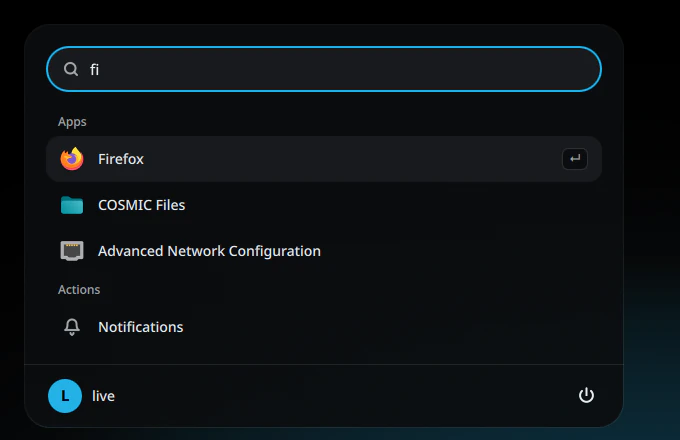

Fail anda
Copy from Windows dari app “Welcome”, dapat balik file dari Desktop, Documents, Pictures, Music dan Videos dan bookmark Edge dan Chrome dan itu dan sekian.
ISO preview dah keluar. Keluaran 110 dalam perjalanan.
Install tanpa internet. Guna macam Windows. Buat kerja, main game, jalankan AI sendiri. Senang je.

Screenshot sebenar KrissOS Shell. Dia ikut tetapan cerah atau gelap anda, sama macam laman ni.
Tabiat lama anda, tetap sama di sini. Rupanya kami punya: lembut, bulat dan tenang, dengan satu warna Sky Cyan.
Copy from Windows dari app “Welcome”, dapat balik file dari Desktop, Documents, Pictures, Music dan Videos dan bookmark Edge dan Chrome dan itu dan sekian.
Log masuk ke Steam, main game Windows macam biasa, melalui Proton (bukan kereta). Ada Xbox Game Pass? Cuba Xodus Nexus (masih eksperimen, tak semua game jalan). Tak pasti? Semak dalam game checker dulu.
Kebanyakan app ada versi Linux atau jalan dalam browser. Yang selebihnya, WinBoat jalankan app Windows dalam tetingkap sendiri.
Behavior macam Windows (sikit), tapi dengan imaginasi kami sendiri.



Pergi kerja naik Kriss, masuk opis guna KrissOS, waktu gaming pun guna KrissOS. Sampaikan vibe coding pun guna KrissOS. Tak payah nak dual boot dah.
Desktop yang tenang, semua benda dah ada. Kalau update buat hal pun, restart, pilih snapshot lama. Simple.
Steam dah siap set, dengan driver yang betul dengan spesifikasi peranti anda (cewah). Laptop lama pun kami lenjan. Tune power macam Tuneboss.
Nak main local AI? Kriss boleh check AI model apa yang ngam dengan GPU anda, tinggal setting-setting sikit, terus pakai.
Lima perkara yang KrissOS pegang untuk setiap keluaran. Takdak syarat tersembunyi, tak banyak bunyi.
kriss rollback, dan undo perubahan tool kami dengan revert.Yang lain semua terus dari Arch. Kami bawa yang kami punya sahaja, dalam satu repo bertandatangan yang dua orang mampu jaga.
Taskbar, launcher yang anda taip, notifikasi, quick settings dan skrin kunci. Inilah desktop asalnya.
Cuba KrissOS sebelum install. Build baru keluar setiap malam, dan hanya selepas ia boot dalam ujian kami.
Terbuka masa mula-mula: game checker, app biasa anda, Copy from Windows, driver dan tambahan.
Steam, GameMode, Gamescope dan MangoHud dalam satu install, berserta mod kuasa yang tukar dengan satu klik.
WinBoat jalankan app Windows dalam tetingkap sendiri. kriss winapps semak komputer anda dulu, lepas tu set semuanya.
Ollama dari app welcome, ditala untuk kad grafik anda, dan langkah pilihan untuk install coding agent yang anda dah guna.
kriss-vm bagi VM Windows guna kad grafik anda, untuk desktop. Ia semak hardware dulu dan undo semuanya dengan satu arahan.
Install di sebelah Windows, dengan setiap snapshot boleh dipilih dalam menu boot. Sedang diuji.
Kernel kami sendiri, ditala untuk pemproses moden dan dibina secara terbuka. Build standard untuk PC lama. Sedang diuji.
Lebih suka Mac? Layout pilihan dengan bar atas, dock di tengah dan butang tetingkap di kiri, dalam rupa yang sama.
kriss migrateDah guna Arch atau CachyOS? Satu arahan akan tukar install itu jadi KrissOS terus, fail dan app anda kekal.
KrissOS akan jalan dengan Secure Boot hidup, dan kekal bertandatangan selepas setiap update.
Boot live USB atau VM. Takde apa yang diinstall sampai anda setuju.